Association Algorithm
Table of Contents
A description of the algorithm used when a binding event between two molecules occurs.
- See Associate for relevant classes
Algorithm
- See here for a more complete (math-ey) description of the rotations.
- Five angles are used to constrain the molecules into their bound conformation (see below)
- Note that all translations/rotations are done proportional to each complex's total diffusion constants, i.e. a complex which a diffusion constant twice that of the other will move twice as far.
- The two reacting interfaces are placed at contact by translation along the vector between them.
- The complexes are pushed apart to sigma by translation along the interface-interface vector
 rotations are performed, by determining the difference between the current and desired angles and determining a rotation quaternion based on that difference and the rotation axis vector, the cross product between the (center of mass)-(reacting interface) and sigma vectors.
rotations are performed, by determining the difference between the current and desired angles and determining a rotation quaternion based on that difference and the rotation axis vector, the cross product between the (center of mass)-(reacting interface) and sigma vectors.  is corrected first, with
is corrected first, with  following.
following.- Next, the omega angle is corrected, using sigma as the axis of rotation.
- Determine the current omega angle:
- The two (center of mass)-(reacting interface) vectors are projected onto a plane looking down the rotation axis (an orthographic projection)
- The sign of the angle between them is determined by taking the cross product and looking at the sign of the z value (either pointing towards the camera or away from it)
- Determine the two rotation quaternions for the reactants (positive and negative rotations, based on their contributions to the total diffusion constant)
- Rotate and translate.
- Determine the current omega angle:
- Phi rotations are performed, using the (center of mass)-(reacting interface) as the axes of rotation.
- All rotations are performed using the reacting interface as the origin, e.g. for theta 2, reactant 2 is the dominant interface, and rotations are done using the vector between it and whatever interface or center of mass is being rotated.
- For all three rotation methods, if the first rotation fails to produce the desired angle, the rotation is reversed and the centers of mass and interfaces are returned to their original positions. The positive and negative half angles are then swapped and the rotation is performed with those new angles (i.e. the rotation is reversed in direction from the original). If this still produces the wrong angle, the association is cancelled.
Angles
- Five angles are used to orient the two associating molecules, 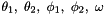
- Using a toy model of two proteins interaction (red and blue) through an interface (iface1 and iface2), the below show the angles in practice.
Theta
- Angle between the (center of mass)-(reacting interface) and the
 vectors. Each association reaction has two
vectors. Each association reaction has two  angles.
angles.
Phi
- Dihedral between an arbitrary (by default the z-axis, or x- or y-axis if an interface to center of mass vector lies along it), center of mass to interface, and sigma vectors for each protein. Each association reaction has two
 angles.
angles.
Omega
- Dihedral between protein 1's center of mass to interface vector, the vector, and protein 2's center of mass to interface vector. Each association reaction has one
 angle.
angle.
Examples
Homogenous Association
- AP2 associationg with a clathrin-AP2 complex
Heterogenous Association
- Clathrins associating with each other
Math
Quaternions
The algorithm uses quaternions for all rotations
Introduction
Quaternions came from Hamilton after his really good work had been done; and, though beautifully ingenious, have been an unmixed evil to those who have touched them in any way...
- Lord Kelvin, 1892
- Number system which extends complex numbers
- Equivalent to the quotient of two vectors, expressed in the form 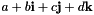, where 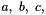 and
 are real numbers and 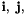 and 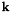 are fundamental quaternion units.
are real numbers and 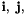 and 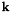 are fundamental quaternion units.- Or, in the language of complex numbers, 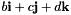 is the complex part, with
 being the real part of the quaternion
being the real part of the quaternion 
- Or, in the language of complex numbers, 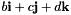 is the complex part, with
- Relevant to rotations, quaternion multiplication is non-commutative.
Why Quaternions?
- Avoids gimbal lock, which can arise when using Euler angles (which may or may not be relevant in this algorithm, I'm not sure)
- Faster (probably) and easier to read/more compact than matrices (definitely).
Rotations with Quaternions
- Axis-angle rotations, i.e. rotations through some angle using a rotation axis 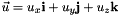, can be represented by a quaternion through Euler's formula 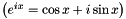:
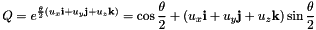
- Must use half angles for association, e.g. 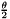 instead of .
 --> rotation of vector using quaternion .
--> rotation of vector using quaternion .  is the inverse of ,
is the inverse of ,  where C is the rotation angle and w is the axis of rotation 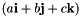.
where C is the rotation angle and w is the axis of rotation 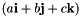.- Q must be normalized for rotation. Normalizes entire thing, including C